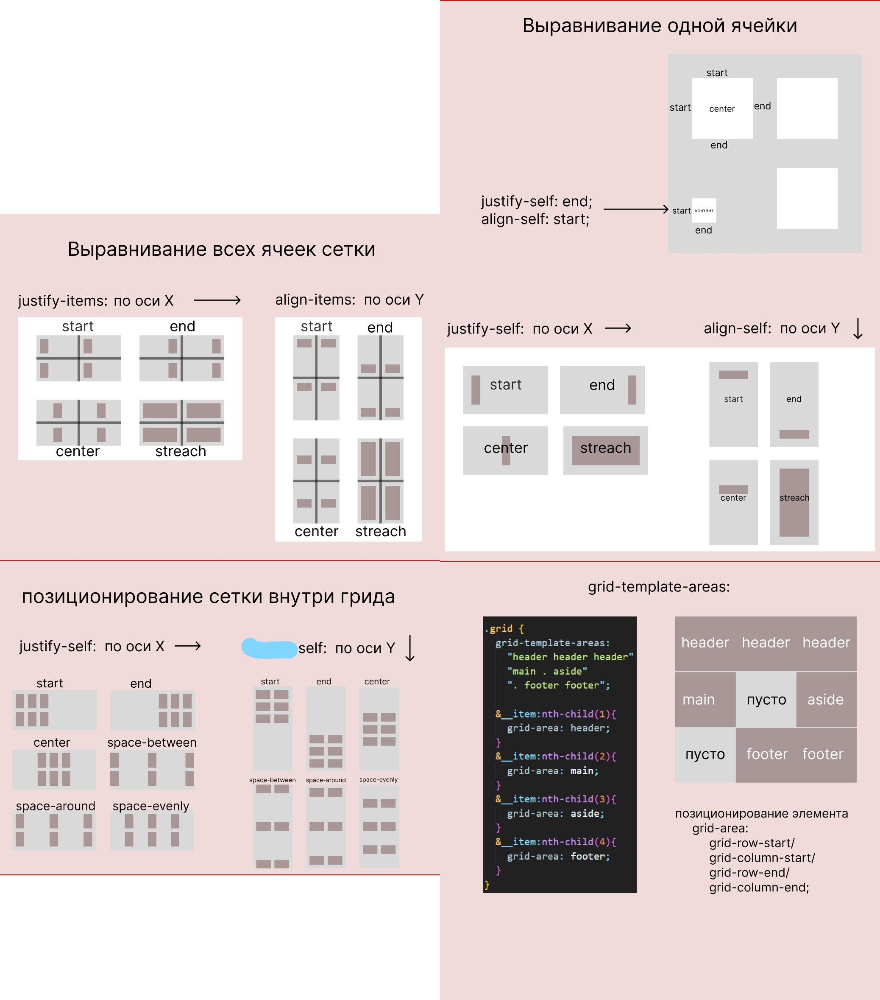

Grid
.element {
grid-column: span 2; // растянется на две колонки
}
grid-auto-flow
Значение по умолчанию row говорит располагать элементы в том порядке, в котором они идут в разметке, и при необходимости создавать новые ряды.
Но если указать значение dense, то контейнер будет заполняться так, чтобы не было пропусков.
Значение dense заставляет грид-контейнер заполнять пустые ячейки первым подходящим по размеру грид-элементом. При этом визуальный порядок на странице может отличаться от порядка элементов в разметке. Если порядок элементов важен, лучше это значение не использовать.

Положение всей сетки
justify-content: start | end | center |space-between | space-around | space-evenly;
align-content: start | end | center | space-between | space-around | space-evenly;
Положение содержимого ячеек
place-items: align-items / justify-items;
justify-items: start | end | center | streach(по дефолту);
align-items: start | end | center | streach(по дефолту);
Положение конкретной ячейки
place-self: align-self / justify-self;
justify-self: start | end | center | streach(по дефолту);
align-self: start | end | center | streach(по дефолту);
grid-template
grid-template: grid-template-rows / grid-template-columns;
grid-row / grid-column
grid-row: grid-row-start / grid-row-end;
grid-column: grid-column-start / grid-column-end
grid-template-areas
.grid-area__inner {
border: 1px solid #000;
max-width: 300px;
width: 100%;
min-height: 250px;
display: grid;
grid-template-rows: 1fr 3fr 1fr;
grid-template-columns: 1fr 1fr 1fr 1fr;
grid-template-areas:
"header header header header"
"main main . aside"
"footer footer footer footer";
точка делает пустым блок
}
.grid-header {
grid-area: header; grid-area: имя области
background-color: rgba(255, 0, 0, 0.327);
}
.grid-main {
grid-area: main;
background-color: rgba(169, 38, 193, 0.475);
}
.grid-aside {
grid-area: aside;
background-color: rgba(65, 155, 145, 0.517);
}
.grid-footer {
grid-area: footer;
background-color: rgb(173, 195, 114);
}
repeat(auto-fill, minmax(3em, 1fr))
repeat(auto-fit, minmax(3em, 1fr))
То же самое но на флексах
flex-container: flex-flow: row wrap;
flex-item: flex: 1/1/3em;
Эти элементы поделили свободное пространство между собой, а не выровнялись по элементам над ними Во flex-контейнере распределение свободного пространства действует в рамках всей строки.
Grid template:
grid-row: 6 / 6;
grid-column: 2 / -1;
grid-column-start / grid-column-end;
grid-row: 2 / 5;
grid-row-start / grid-row-end
grid-column: span 2;
grid-row: span 3;
span растягивает ячейку на указанную цифру
grid-area: 5 / 1 / 7 / 4
grid-row-start / grid-column-start / grid-row-end / grid-column-end
grid-row: 1 / 1;
grid-column: 2 / 3;
grid-row: 7 / 8;
display:grid в IE11
Памятка по особенностям использования display: grid в IE11 на простом примере. IE11 вполне сносно работает с grid, если учесть его специфику. Про сам grid я рассказывать не буду, в сети полно исчерпывающих руководств, здесь же хочу заострить внимание именно на отличиях его реализации в IE11, потому что это единственное известное мне свойство, которое не корректируется автоматически использованием autoprefixer.
Для начала опишем словами макет. Это таблица из трех колонок и четырех строк с отступами между ячейками. Ячейка 4 занимает две колонки, ячейка 5 занимает три строки.
Блочная модель выглядит так:
‹div id="container"›
‹div class="cell"›1‹/div›
‹div class="cell"›2‹/div›
‹div class="cell"›3‹/div›
‹div class="cell col-span"›4‹/div›
‹div class="cell row-span"›5‹/div›
‹div class="cell"›6‹/div›
‹div class="cell"›7‹/div›
‹div class="cell"›8‹/div›
‹div class="cell"›9‹/div›
‹/div›
Теперь пишем стили для современных браузеров:
#container {
display: grid;
grid-template-columns: 1fr 1fr 1fr;
grid-template-rows: 1fr 1fr 1fr 1fr;
grid-gap: 1em;
}
.col-span {
grid-column-start: 1;
grid-column-end: span 2;
grid-row-start: 2;
}
.row-span {
grid-row-start: 2;
grid-row-end: span 3;
}
Здесь все логично. Для содержащего контейнера наша сетка описывается указанием количества колонок, количества строк и отступов меджу ними. Описывать простые ячейки нет необходимости, браузер сам расставит их по местам. Опиисания требуют только особенные, занимающие несколько мест. Для ячейки, объединяющей несколько столбцов, указываем столбец начала и столбец конца с ключевым словом span. Аналогично для строк. С ИЕ все сложнее. ИЕ поддерживает старую спецификацию grid, в которой отступы считались за отдельную колонку. Поэтому свойства для отступов grid-gap не существует, отступы нужно указывать в описании сетки. Из этого следует, что у нас изменяется нумерация колонок и столбцов. Кроме того, для ИЕ необходимо указывать положение в сетке для каждой ячейки, иначе он поставит их все на первую позицию.
Стили для ИЕ11:
#container {
display: -ms-grid;
-ms-grid-columns: 1fr 1em 1fr 1em 1fr;
-ms-grid-rows: 1fr 1em 1fr 1em 1fr 1em 1fr;
}
.cell:nth-child(1) {
-ms-grid-column: 1;
-ms-grid-row: 1;
}
.cell:nth-child(2) {
-ms-grid-column: 3;
-ms-grid-row: 1;
}
.cell:nth-child(3) {
-ms-grid-column: 5;
-ms-grid-row: 1;
}
.cell:nth-child(4) {
-ms-grid-column: 1;
-ms-grid-row: 3;
-ms-grid-column-span:3;
}
.cell:nth-child(5) {
-ms-grid-column: 5;
-ms-grid-row: 3;
-ms-grid-row-span:7;
}
.cell:nth-child(6) {
-ms-grid-column: 1;
-ms-grid-row: 5;
}
.cell:nth-child(7) {
-ms-grid-column: 3;
-ms-grid-row: 5;
}
.cell:nth-child(8) {
-ms-grid-column: 1;
-ms-grid-row: 7;
}
.cell:nth-child(9) {
-ms-grid-column: 3;
-ms-grid-row: 7;
}
Видно, что, к примеру, для второй ячейки указана колонка 3, а не 2 - это как раз то смещение из-за отступа,это он занял вторую колонку. Собственно, это все. С учетом этих несложных особенностей grid вполне можно использовать в IE11.